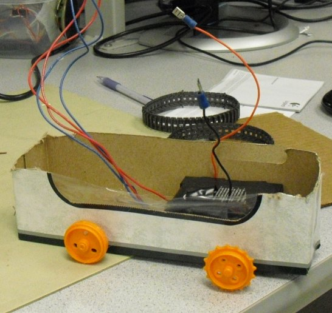

Hardware
FPGA Hardware Design
The main modules created in hardware were the timer module, calculator module, translate module, graphics card module, and Nios II microcontroller. Each will be described in detail in this section. Furthermore, tradeoffs made in the design of these modules will be described as well as design decisions that did not result in the desired system function and had to be changed. As a note, all hardware referred to in this section was coded in Verilog. If we did not write a particular piece of code referenced we will give due consideration to the source.
Timer Module
The first module created for our system was the timer module. The Verilog for this module can be seen in Appendix B. The purpose of this module was to determine the amount of time that has passed between when a sound source was activated (told to beep) and when the actual beep was heard by the hardware. In order to do this, the module counts clock ticks of the 50 MHz system clock beginning with the rising edge of a start signal. Since the sound receiving circuitry created for this project was composed of three microphones, it was necessary to have three time capture registers and a ready signal for each.
The timing module is basically an always block that checks the status of pins connected to the microphones on every clock tick. If the pin corresponding to a particular microphone has gone high between clock ticks, the system sets a ready signal for that microphone and captures the number of clock ticks that have passed in a time register for that microphone. When all the microphones are ready, a ready signal is set. If a particular microphone does not get a ready signal by the time the counter has reached its maximum value (222-1 or 4194303 clock ticks), the ready signal for microphone that has not received a value is set, and the time value for that microphone is set to the maximum count value.
Since a sound signal is a lot longer than the time between 50 MHz clock ticks, we also use the ready signals for each of the microphones to decide if a time (clock tick count) should be captured for a particular microphone. The hardware only captures a time for a particular microphone if the ready signal for that microphone is not sent.
The inputs to this module include the microphone input pins (a digital pin that is high when the microphone senses sound and low otherwise) and 50MHz system clock signal. A start signal from the Nios microcontroller is also an input to this module. When the start signal is low, the system performs reset (zeros all the microphone time registers, clock tick counter register, system ready signal, and microphone ready signals). When the signal goes high, clock tick counting and recording begins.
Output from the modules include the count signals for each of the microphones, which is a 22-bit integer. The final output is a ready signal that tells when all the count values are valid and can be reliably used by other modules.
Although the timing module seems very straightforward, it went through several revisions as our project progressed. When we first began, our plan was to use the Wolfram WM8731 Audio Codec of the DE2 board to detect signals from the microphones. The maximum sampling rate of the audio codec was 96kHz; therefore, our plan was to count clock ticks using the 96kHz sampling clock, and monitor the output of the audio codec until a pulse reflecting a sound was seen. We then would test filter the sound to make sure that it was actually a signal produced by the sound source, and set a ready signal if all tests were passed.
We ran into several problems with this initial scheme. The first problem was that the Audio Codec could only support 2 microphone inputs and we desired to use three for the sound localization process. Furthermore, we found that counting ticks of the Audio Codec sampling clock would not give us enough accuracy to calculate angles (the angle the robot is from the DE2 board). Using the 96kHz sampling clock we were able to achieve a resolution of 0.01171875ft with the system. The calculation can be seen below.
Although this is accurate enough for a distance calculation, we soon discovered that it was not accurate enough for angles (especially if the robot is far away from the system). At a later point in the project, we decided to keep the robot relatively close to the FPGA; however, we still kept the 50Mhz timing scheme, which gives the project the option of expandability. When using the 50MHz system clock, the resolution of the system can be seen below.
This was found to be sufficient for sound localization up to a distance of 80ft (which is the maximum distance we expected a project of this type to be used for).
Translate Module
The translate module was designed to convert time count values to distance values. The Verilog for this module can be seen in Appendix C. The relationship between time count and distance was found to be nearly linear through experimentation. The robot was placed at various distances from the sound receiving circuitry and sent a signal to produce sound. Several time count values were recorded for distances of 3, 4, 5, 6, 7, and 8 ft from the sound receiving circuitry. The graphs were shown in the background math section of the report. The equations for each microphone can be seen below.
Left Microphone:
Right Microphone:
Middle Microphone:
The largest challenge in creating the translate module was to determine a fixed point scheme that would allow the small slope value to be properly (accurately) represented. After consideration, we decided to use a 22-bit number to represent the fraction. The most significant bit of this 22-bit number would correspond to the 16-th bit of the actual fraction in binary form. It was found that the slopes for all 3 microphones had binary values of 0 until the 16-th bit; therefore, the 16-th bit was deemed a logical place to begin the fixed point representation of the number. The y-intercept portion of the fraction was represented as a fixed-point number with a 5-bit integer and 17-bit fraction.
The basic design of the translate module was a state machine with five states. The first state (mult1) was a setup or control state. In this state the time count values to be translated are checked in order to determine if they are valid values. If the values correspond to 0 or the maximum counter value, it is known that a problem has occurred when taking time measurements. Therefore, the system proceeds to the final state and sets a complete flag for the system. The remaining three states of the system were named distL, distR, and distB. They are designed to calculate the distances from the robot (sound source) to the left, right, and middle microphones respectively. Once this is completed, the final state enters the complete state where a flag is set to alert users of the module that valid distance values are available for use.
Due to the large demand for multipliers in the calculator module described in the next section, we decided to use only one multiplier (composed of several multiply hardware units) in the translate module with multiplexed inputs. The main role of the multiplier is to multiply the slope value by the time count value for each microphone in the system. The inputs to the multiplier depend on the state the system is currently in. Simulations were performed to ensure that the multiplier was receiving the correct inputs for each state (and also producing the correct output for that state).
Due to the fixed point scheme of the inputs, the multiplier for this module was carefully designed. It can be seen in Appendix D. As described above, the slope input was a 22-bit fraction that had been shifted to the left by 15-bits such that its most significant bit was the 16-th bit in the actual number. For this reason, the actual number was a 37-bit fraction. The second input was a 22-bit integer (time count value). When multiplied together, the result was a 44-bit number, of which 37-bits are fractional bits. At this point in the project we had decided that the maximum distance we wanted to test our system over was 20 ft. Translating 20 to binary results in a 5-bit number. Therefore, we decided to keep 5-bits of the integer result. The translate module was created after the calculator module had already been designed due to a fault in the original system design. Since the calculator module was designed to take 22-bit inputs, the output of the translate module was required to be 22-bits to interface properly with this module. Therefore, 17-bits of the fraction were kept. The result is returned to the translate module.
As a summary, the inputs to the translate module are the system clock, to time transitions of the state machine, and the three time count values from the timer module. The final input is the start signal, which causes all registers in the translate module to reset while equal to 0, and allows the calculation to be performed while 1. The output of the system are the three distance values and the ready signal.
Calculator Module
The calculator hardware module is designed to calculate the angle of the robot from the FPGA system based on the values of the left and right microphones of the system. After creating the initial calculator draft, which only produced an angle, we decided that the x and y coordinates of the robot in relation to the FPGA would also be useful in controlling the robot’s motion. For this reason, the calculator module was expanded to calculate Cartesian coordinates as well.
The calculator module was designed to implement the cosine rule described in the background math section. The cosine rule can be used when 3-sides of a triangle are known in order to calculate an angle in the triangle. In this system, the calculator is designed to find the angle formed between the robot, right microphone, and left microphone. See diagram below.
The distance between the robot and right microphone as well as the distance between the robot and left microphone are passed into the calculator module. The distance between the right and left microphones is a constant value that is part of the setup of the system (1ft). The rule is repeated here in order to aid the discussion of its implementation.
This module was designed as a state machine that would perform the math necessary to complete the cosine rule. In the first state, multiplication is performed in order to find the squares of both the left and right distance values to the robot. The square of the distances between the microphones is a constant value (1). The following state performs the necessary addition and subtraction in order to obtain the numerator and denominator values necessary for the division to complete the equation. The multiplication needed for the denominator was easy to implement since the distance between the two microphones is 1 and the multiplication by 2 can be performed as a left shift by 1.
The most difficult part of this process was choosing a method to perform division. Although we could have implemented a fixed point division algorithm in hardware that would operate in around 33-cycles, when constructing the module we decided that a faster division approach would be more beneficial to the system. We decided to create Altera MegaWizard functions that would convert the values to floating point, perform division, and then convert back to fixed point. This would operate in around 18-cycles, which is an improvement over the first method considered. Therefore, since we had enough resources, we decided to go with the faster approach.
The MegaWizard functions provided by Altera were not designed to operate on fixed point values; therefore, slight modifications needed to be made to have them work in our system. Rather than changing the actual MegaWizard integer to floating point and floating point to integer functions, we decided to change how our hardware interacts with the MegaWizard functions.
When converting from fixed point to floating point, the MegaWizard function assumes the input is a 44-bit integer (when squaring the distance input values, they double in size to 44-bits). The real input is a 10-bit integer and 34-bit fraction. Therefore, once the MegaWizard function has completed its conversion, we modify the results by subtracting 34 from the exponent of the floating point number. This is equivalent to dividing by 234 and once again making the number a 10-bit integer and 34-bit fraction.
When converting from floating point to fixed point, only the integer portion of the floating point number is returned. This is a problem because the argument to the inverse cosine value will always be a value between -1 and 1. In other words, for most angles it will be a fractional value. Therefore, using the floating point to fixed point MegaWizard conversion function without slight modifications would not give us the angle resolution needed in the system.
Before deciding how to handle this problem, we considered what we would do with the division result after converting it back to a fixed-point value. The next step in calculating the cosine rule is to take the inverse cosine of the result. We decided to create an inverse cosine lookup table to perform this function. The initial lookup address was set to a width of 8-bits which would result in 256 lookup values in the table. While this would give excellent angle resolution around 90 degrees, after some tests, we found that it would not be good for angles lower than 20 degrees and greater than 160 degrees. For really small angles there could be an error as great as 5 degrees.
In order to rectify this, we calculated the inverse cosine of several small angle values. We converted these values to binary and began looking at the similarities in the bit patterns. We found that for very small and very large angles, the bit-patterns do not differ until the 12-th bit. For this reason, at least 12-bits is needed for a lookup table. The final lookup table had an address width of 13-bits. This is necessary due to the fact that angles mirrored around 90 degrees have identical bit patterns with one exception. The angles above 90 degrees have negative cosine values and the angles below 90 degrees have positive cosine values. Therefore, the extra bit is needed as a sign bit to distinguish between angles above and below 90 degrees.
The realization that 12-bits of the floating point fraction are needed to perform the lookup in the inverse cosine table, led us to realize that we could simply add 12 to the exponent of the floating point division result before it is converted to an integer. The conversion result then ends up as a fixed-point number with a 20-bit integer and 12-bit fraction. The lower 13-bits of the conversion result are used as the lookup to the inverse cosine or angle table. The output of the table (which has 8192 elements), is a 24-bit angle value of which 9-bits are an integer and 15-bits are a fraction (the values for the table were created using a derived Matlab function).
The final act of this hardware is to determine the x and y Cartesian coordinates using the angle value found and the right distance value input to the module. In order to convert between Cartesian and polar coordinates, it is necessary to take the sine and cosine of the angle. Two lookup tables were created each with 180 values. They are designed to perform a cosine and sine translation to within 1 degree accuracy, which is all that in needed in this project. Therefore, they each have an 8-bit address value, which corresponds to the lower 8-bits of the angle. Rounding is also taken into consideration; therefore, if the angle has a fraction greater than or equal to .5, 1 is added to the value being used as the sine and cosine lookup table addresses. These tables return a 2-bit integer, 15-bit fractional number that represents the sine or cosine of the angle (2-bit integer is necessary because the cosine result could be positive or negative 1).
When the results return, fixed point multiplication is performed on these values with the right distance value. The multiplier to perform this function can be seen in Appendix D. It is required to multiply a 2-bit signed integer, 15-bit fractional number with a 6-bit signed integer, 16-bit fractional number. The result of the multiplication is a 6-bit signed integer with a 16-bit fraction.
After the calculation is completed, the ready signal is set. The calculator state machine waits in the complete state until a new start signal is received. The start signal clears all math registers used in the module and performs the operations described above once again on the new values input to the module.
The calculator module went through the most revisions of all the hardware we created. Our first version of the module was designed such that a conversion to distance was unnecessary to get the angles. The time counts would simply be used in the form outputted from the timer module. We soon realized that we could not do this due to a wrong assumption in our logic. We had assumed that every microphone would have the same response resulting in time count values that would be the same for the same distance. Since this was not true, it was not possible to calculate the angle to the robot without a distance conversion.
Graphics Card
Graphics Card
We took a minimalistic control approach for our graphics. The NIOS specifies a point and a color and the GRAPHICS_CARD draws a rectangle of the specified color at the point. The only communication other communication is a ready signal that the GRAPHICS_CARD uses to signal that it has latched the provided values. Once initialized the “graphics card” continually draws rectangles based on the endpoints and color, pulsing the ready line every time it starts a new rectangle. The state machine is summarized in below.
The module works by updating the SRAM while the VGA controller is outputting a vertical sync. While the VGA controller writes to the screen, the GRAPHICS_CARD waits in whatever state it was in last.
To control the GRAPHICS_CARD, the NIOS needs to pass in the corner and color of the rectangle it wants to draw. On the next ready pulse after having set these values the Nios knows that the drawing has been committed and that the GRAPHICS_CARD is ready to accept a new rectangle.
The graphics card state machine runs on the VGA_CTRL_CLK of the system. This clock is created by the VGA_Audio_PLL module. It is a 25MHz clock with no phase shift. The clock that is sent to the VGA is also a 25MHz clock; however, it has a -90 degree phase shift. The VGA_CTRL_CLK clock was used to control the state machine in order to make the graphics card run synchronously with the VGA. This would reduce the likelihood of flicker and other display problems.
Nios II SOPC
The Nios II microcontroller for our system was created using the Altera SOPC builder. A figure of the SOPC builder GUI can be seen below.
The Nios II was designed to take in all signals from the hardware described above such that it could be processed and used to control the robot. Furthermore, it controlled the VGA code such that the position of the robot in relation to the FPGA and a target could be displayed to the various users of the system. The main features of the SOPC design will be mentioned here.
The Nios II controller chosen for our system was the basic processor, which can basically be treated as a microcontroller. Its program memory is held in SDRAM which was also chosen as part of the SOPC design. A JTAG UART module was added for communication and debug purposes. A standard UART was also added to the board for communicating with the XBee wireless device (a piece of hardware external to the DE2 system).
All other peripherals were standard input/output devices. The ready signals for the graphics card, distance calculation, and angle calculator were made to generate interrupts on the rising edge of the respective signals. All other input/output ports were simply designed with the bus width necessary to transmit data between the Nios II and its various hardware peripherals that we designed.
External Hardware
The external hardware connected to the DE2 board consists of the power regulating circuitry, the microphone boards with additional amplificaiton, and the Max233 level shifter feeding into the XBEE wireless transmitter.
A large amount of time was spent debugging the analog circuitry responsible for amplifying and filtering the microphone outputs. The goal of this part of the circuitry is to output a digital high when a ping is heard and zero otherwise. In order for a ping to cause a digital high it needs to be amplified by about 500 times. The option existed to attempt to do all of the filtering on the FPGA, but we were nervous that in the process of amplifying the signal to detectable levels we would end up saturating and losing the desired information. The amplifying band passes implemented help avoid this by only amplifying a small range of frequencies.
The problem with these circuits was that the high amplification made them very susceptible to noise on their power lines as well as to the error tolerances of the resistors. Out of 5 identical microphone boards built, only 3 functioned correctly and they all had slightly different pass bands and amplifications. Of the 3 that worked, one could not be connected to a final non inverting op amp due to stability issues that disrupted the whole system.
Originally the same 3.3V regulator was used for both the microphones and the XBEE. It turned out that the XBEE transmit caused large enough power fluctuations to set off the ping detectors.
A detailed schematic can be found in Appendix I
Robot Hardware
The robot is controlled by an Atmega32 in a carrier board running at 16MHz.
The controller communicates with the NIOS on the DE2 board with USART passed through an XBEE. The XBEE is powered by a 3.3V regulator that drops from the 5V powering the microcontroller.
For movement the Atmega32 is connected to a TB6612FNG Dual Motor Driver which powers two motors set into a dual motor gearbox. The Atmega32 controls the 4 inputs that specify direction as well as the PWM inputs.
To make the pings the microcontroller outputs to a MOSFET that connects the speaker mounted in the front to the battery.
In addition samples are taken from an analog alcohol sensor and made available on request to the NIOS.
The robot is made out of a tissue box glued to a Tupperware container. The gearbox is mounted to the tissue box and fitted with treads.
The battery is an RC car battery and is charged as shown below
For the materials the robot is constructed of the robot operates well. There are no electrical glitches, and it is relatively stable mechanically. The one area it shows error is in its turning. The treads flex the cardboard over time affecting the relative speed they move at. This makes right and left turns not symmetric.